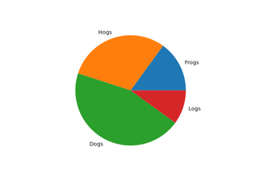
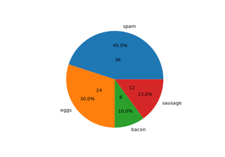
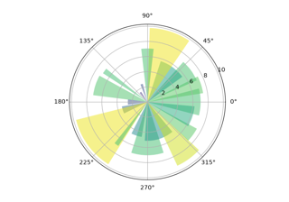

Pie and polar charts#  Pie charts Pie charts Bar of pie Bar of pie Nested pie charts Nested pie charts A pie and a donut with labels A pie and a donut with labels  Labeling pie charts Labeling pie charts  Bar chart on polar axis Bar chart on polar axis Polar plot Polar plot Error bar rendering on polar axis Error bar rendering on polar axis Polar legend Polar legend Scatter plot on polar axis Scatter plot on polar axis